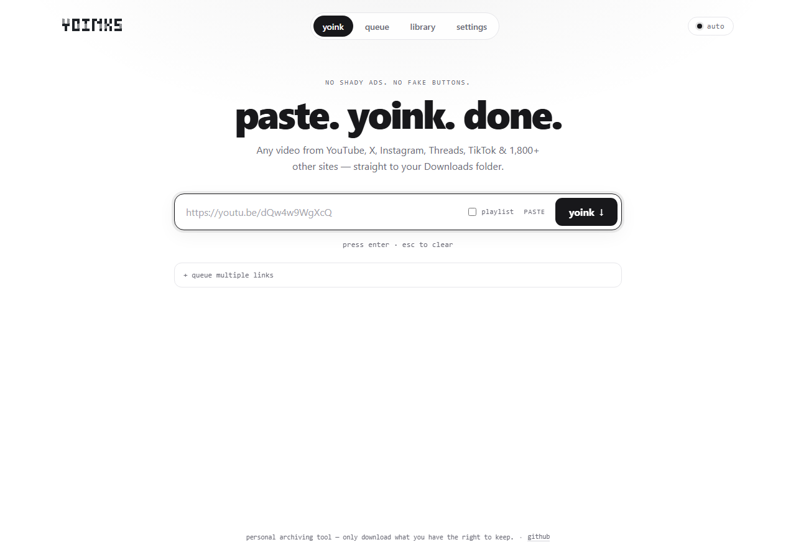
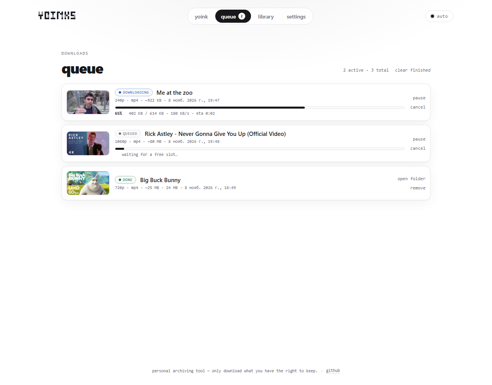
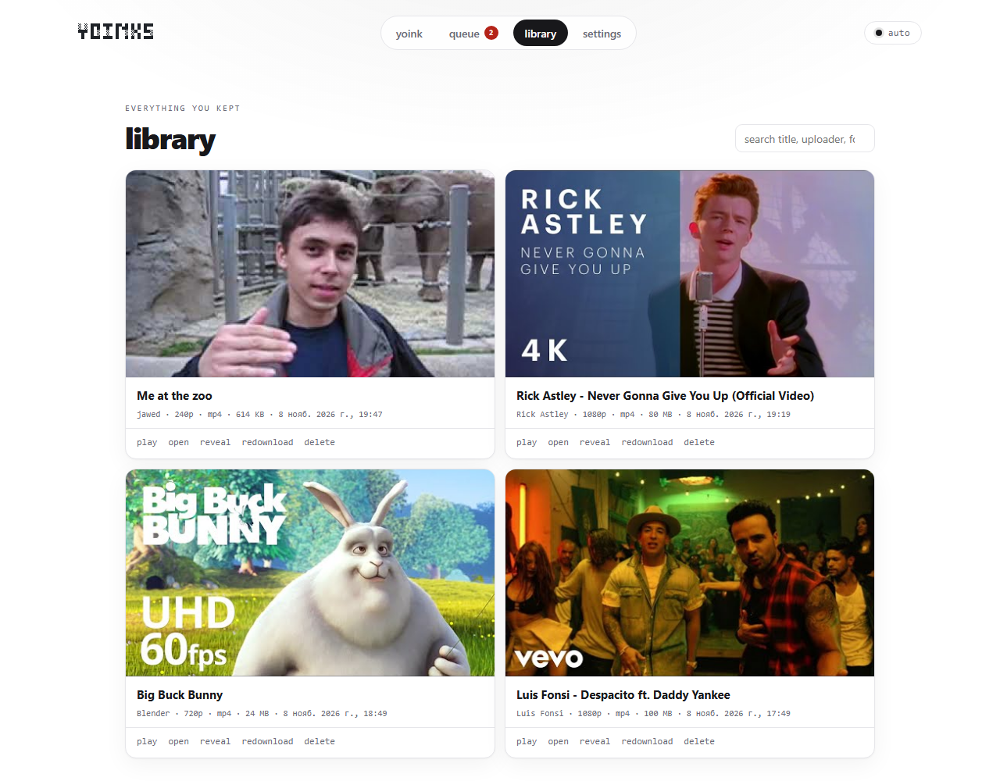
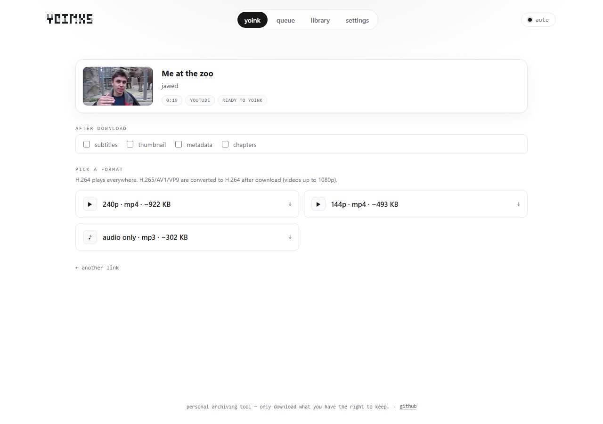
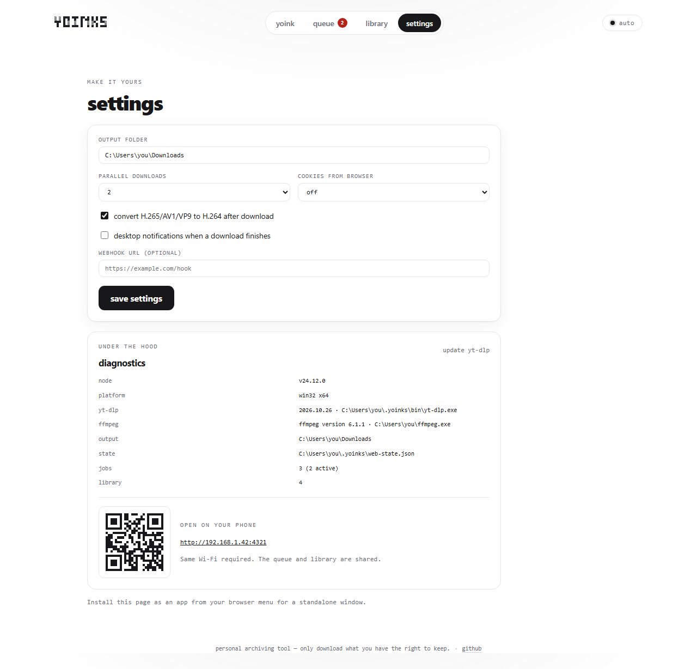

A queue that behaves
Run 1–5 downloads in parallel, pause and resume, cancel cleanly, retry failures. The queue survives a server restart.
Open source · local-first · self-hosted
A proper web UI for your personal video archive. Queue downloads from YouTube, X, Instagram, TikTok and 1,800+ sites — with a real library, playlists and a phone-friendly layout. No ads. No fake buttons. No cloud.

What a terminal couldn’t do
Queues, thumbnails, playlists, file management and a phone-friendly layout — the parts that are awkward in a terminal are just a click away here.
Run 1–5 downloads in parallel, pause and resume, cancel cleanly, retry failures. The queue survives a server restart.
Every file with its thumbnail, title, format, size and date. Search, preview in the browser, open the folder, re-download or delete.
Tick episodes from a playlist or paste a hundred links. Each job probes itself and picks the best compatible format.
H.264 + AAC in mp4 by default. HEVC, AV1 and VP9 are detected and converted automatically for videos up to 1080p.
Pull cookies from Chrome, Edge, Firefox and friends for private, age-restricted or region-locked videos.
Install it as an app, scan the QR code in Settings and queue from your phone. Share a link straight into yoinks.
See yt-dlp and ffmpeg versions, update yt-dlp in one click, and get clear notes when a site refuses a download.
The server binds to localhost. Files stay in your Downloads folder. No accounts, no telemetry, no cloud round-trip.
A quick look




Quick start
Grab the fork and open the folder.
npm run quick installs dependencies on first run and opens the UI.
Drop a link, pick a format, hit yoink. Files land in ~/Downloads.
On Windows, double-click start-yoinks.cmd. Prefer the cloud?
Open in Codespaces ↗.
git clone https://github.com/IvanBurenin/yoinks-web-mod.git
cd yoinks-web-mod
npm run quickWhy a fork?
yoinks was built by Pablo Stanley as a fast Ink-based terminal downloader. This fork keeps the CLI and adds a local web UI: queue, library, playlists, settings, diagnostics and PWA support. Open source, not affiliated with the original author.
FAQ
No. It runs on your machine at http://127.0.0.1:4321. Files are saved to your own Downloads folder; nothing is uploaded to a cloud.
No. yt-dlp is fetched automatically into ~/.yoinks/bin, and ffmpeg is bundled as a fallback. Node 18+ is the only requirement.
Anything yt-dlp supports — YouTube, X/Twitter, Instagram, Threads, TikTok, Vimeo, Twitch, Reddit, Facebook and 1,800+ others.
Yes. Start with npm run web -- --host 0.0.0.0, then scan the QR code in Settings. PWA installation and notifications need a secure context (localhost or HTTPS).
The terminal CLI is the original work by Pablo Stanley. This fork adds a web UI, persistent queue, library, playlists, settings, diagnostics and PWA support. It is unofficial and not affiliated.
yoinks is a personal archiving tool. Downloading may violate a platform’s terms of service — only download what you have the right to keep, and support the creators.
Ready when you are
Free, local and open source. No account, no cloud, no nonsense.